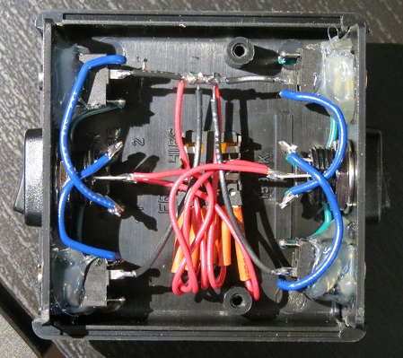
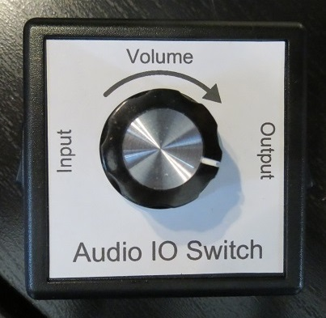
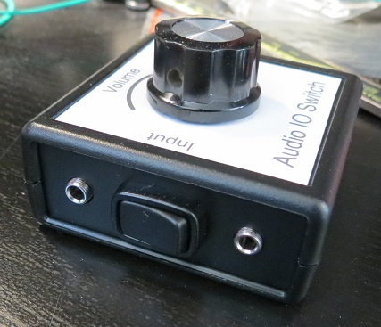
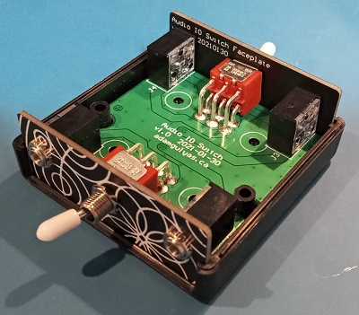
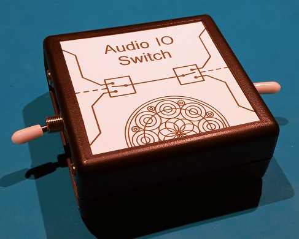
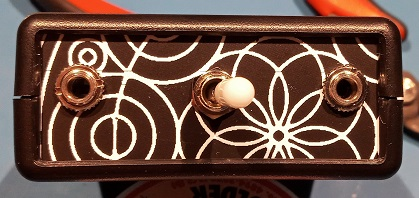

Audio IO Switch
I found I was switching my headphones between my phone and computer a lot, which was kind of annoying. This was a quick project to make it easier that became more complicated than it should have.
Version 1
  The label is a full sheet sticker that I ran through a printer and cut out. A rocker switch was chosen for its low profile and satisfying click, and I already had the enclosure.
I ordered a bunch of cheap TRS jacks from china, which proved to be a really bad idea. They came without nuts and the thread was a non-standard one. I took them to both the machine shop at the UofA and a custom audio system business, but they couldn't identify it. However, the guy at the audio place did pull a nut off a cheap mixing console with similar jacks that fit mine. Whatever this thread was, it seems to be a chinese standard. Since I couldn't find nuts for them, I ended up just hot gluing them into the enclosure. The hot glue ended up failing (like it usually does) from the insertion force of the cable.
The potentiometer was also disappointing. When I turned the knob, the left and right audio channel volume would change at different rates. I didn't know this before, but apparently manufacturers have a hard time matching the resistive wafers inside dual gang pots.
This version also took a lot of effort to solder. I definitely wouldn't want to do a batch of 10, or even 5, of them. There had to be a better way.
Version 2
  Version 2 focused around making everything easy to assemble, which meant the only soldering I wanted to do was on a PCB.
I came across the idea of using a PCB as a face plate, which seemed promising. It's easy to add holes in precise locations in an ECAD program, and you get free text and art in the silkscreen layer. The enclosure I was using had a 1.6 mm thick face plates, which is a standard PCB thickness.
I measured the face plate that came with the enclosure and reproduced the outline. The corner curvature took a few tries to get right, comparing it with the 3D model of the enclosure I imported into Altium. The hole Y locations were derived from the component datasheets, then checked by exporting the PCB as a step file and importing it into the main board's PCB file.
The graphic is Mandala_52 from Wikipedia, which is available under the CC A-SA license.
The main board's outline was given in the datasheet for the enclosure. There were no rocker switches that were both through hole and panel mount, so I used a toggle switch. Putting it between the TRS jacks will hopefully let the cables protect it a bit.
Assembly was pretty easy. I put all the parts together, minus the top of the enclosure, then tightened the nuts on the jacks and switches. Then I put the top on and took the bottom off, which exposed the solder pads while keeping everything lined up. Soldering took ~5 minutes and I was able to put the bottom back and screw it closed.
Testing
Everything beeped out correctly, but what I really want to do is measure the channel isolation. Ideally I would connect it to an Audio Precision system and measure all the transfer functions vs frequency, but I don't have access to one right now. I do have some TRS to BNC cables coming, but they were delayed by Covid and won't arrive until next month, and I'm not in enough of a rush to hack my own cables.
BOM
| Part | Manufacturer | Part Number | Digi-Key Part Number | Quantity | Price/unit (CAD) |
|---|---|---|---|---|---|
| Enclosure | Hammond Manufacturing | 1593KBK | HM355-ND | 1 | $5.42 |
| Switch | E-Switch | 100DP1T1B1M6QE | 100DP1T1B1M6QE-ND | 2 | $4.74 |
| TRS Jack | Switchcraft Inc. | 35RAPC2BV4 | SC1460-ND | 4 | $3.19 |
| Face Plate | JLCPCB | - | - | 2 | $0.61 |
| Main Board | JLCPCB | - | - | 1 | $0.49 |
The PCBs came from JLCPCB as part of a larger order, so the shipping and import fees cost maybe $5 per set of 3 boards?
In total, the unit cost of one Audio IO Switch was $35. However, if I built a run of 100, it would drop to $26.50. According to Dave from EEVblog, that means I should charge $65/unit. I think the build quality is high enough that it will last years (the weakest link is probably the jacks), but I'm not sure if there would be enough demand. I suppose I could try selling on Tindie to see if anyone else was interested.
If I did start selling, I'd probably try to get a plastic label of some sort. The paper sticker one isn't water proof.
In any case, I'm really pleased with how it came together. I think it's really polished.
Back to Projects